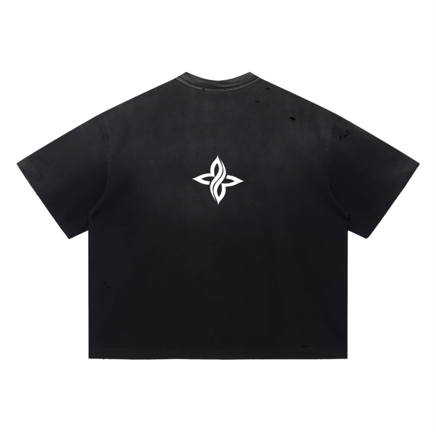
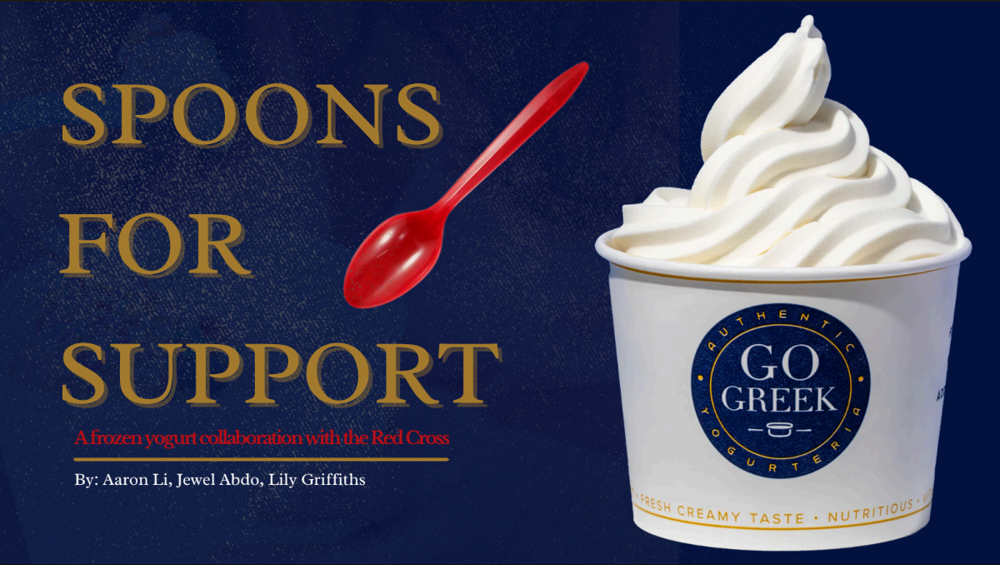

Projects
Selected work

PR Strategy · Cause Marketing
Make Me Hungry — PR Coordinator
A boutique F&B PR agency in LA. Pitched, ghostwrote, and executed earned media and brand activation work across a portfolio of hospitality clients — including a cause-marketing concept that was adopted by a CEO and executed as a full campaign.
CEO-adopted campaign · 4-client PR portfolio · Lupus Awareness activation

Brand Strategy · Social Media
11VN11 — Brand & Growth Strategy
Developed a full brand repositioning and growth strategy for a founder-driven premium lifestyle apparel brand, shifting it from creator-centric to community-first — with a geographic expansion framework, ambassador program, and KPI dashboard.
Full brand strategy · Distribution roadmap · KPI framework

Revenue Strategy
Break On 2: Latin Fusion — Growth Plan
Developed a revenue growth strategy for a Latin fusion dance organization facing budget constraints, designing a salsa night fundraiser series, targeted digital campaigns, and a new cross-functional communications structure.
500% net worth increase · 3× programs funded

Behavioral Research · USC Dornsife · Cause Marketing
Identity-Based Motivation & Spoons for Support
Two projects anchored in the same core belief: the most effective consumer influence doesn't argue — it aligns with how people already see themselves. One is academic research; the other is applied cause-marketing strategy.
200+ research participants · $50K–$100K+ projected campaign scale